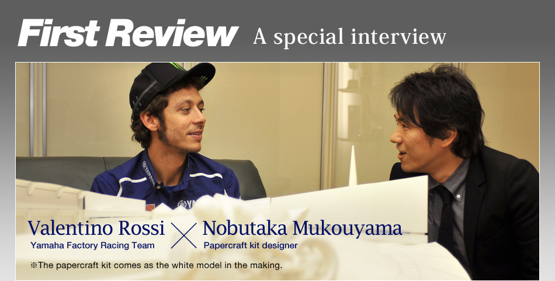
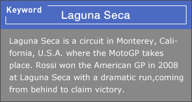

Representing the world of racing with Rossi's victory at Laguna Seca as its motif
MK: Every papercraft model that has been released at the Yamaha Motor's website so far was modeled after a single object. This time around, I created this type of work wanting to represent a racing scene along with its world view. It embodies the general world of racing, and you, Mr. Valentino Rossi, inspired the machine and its rider at the center of the work as a racer with a long, succesful career.
VR: Really?
MK: At Laguna Seca…
VR: Aha! I get it! So Casey Stoner is supposed to be racing alongside.
MK: I put a lot of thought and effort in recreating the part where the left foot is off the peg.
VR: Ha ha ha. Awesome! How long did it take you to make this?
MK: It took me a year to create.
VR: A whole year?
I've never seen one this awsome!
MK: (Holding a papercraft model of the YZR-M1) See, I've also created the engine under the cowling.
VR: Wow!
MK: Have you ever made a papercraft model like this as a child?
VR: No, I haven't. I've never even seen one so awsome like this.
MK: Do you want to make one yourself?
VR: Um. . . nope. I prefer admiring it (laughing).
What would you like to say to yourself
at the scene back then?
MK: What are your hobbies other than motorcycling?
VR: I like physical exercise. I actually like sports in general. I really like snowboarding and playing soccer, too.
MK: You also care a lot about designs, don't you?
VR: Yeah, I care about designs.
I have designs I like applied to my helmet, motorcycle, riding suits, gloves,and boots. I have a designer friend of mine put the designs on them for me.
I think a livery on the helmet is significant in expressing a rider's personality.
MK: The kit is in the making and still white at this point, but I am interested in what colors you would add to it, Valentino.
VR: Well. . . I think it might be interesting to color it exactly as it had been at Lagna Seca (at that time in 2008).
MK: What would you like to say to yourself at the scene back then?
VR: Finish the corner, and try not to crash on the gravel!!
For the fans who will challenge to make this papercraft model
MK: Could I have a message for your fans who will challenge to make this papercraft model?
VR: I definitely want to see the finished projects and have them posted (on the website) right away! I hope you'll all have fun with the new papercraft kit!
MK: Thank you very much!